Bảng nghiên cứu đối thủ · quét ngày 03/10/2026
Teardown kênh Instagram @iamfacelesszara
Nguồn: 189 bài (lượt xem của 185 Reels, caption của cả 189 bài), 5 highlight, 9 video top được cắt khung theo giây, 1 bài thất bại để đối chiếu, 4 kênh cùng ngách, TikTok, Threads, trang bán hàng. Vùng khoanh đỏ trên mỗi ảnh là chỗ cần nhìn.
- Hồ sơ và định vị
- Phễu bán hàng và giá
- Đường tăng trưởng
- Các tuyến nội dung và hiệu quả
- Mổ video từng giây + prompt viết ngược
- Bài thất bại
- Công cụ và tính năng họ chọn
- Caption, CTA, hashtag, giờ đăng, âm thanh
- Khán giả quan tâm điều gì
- So với cả ngách
- TikTok và Threads
- Ba việc chưa làm được
- Kết luận và việc anh cần quyết
1Hồ sơ và định vị
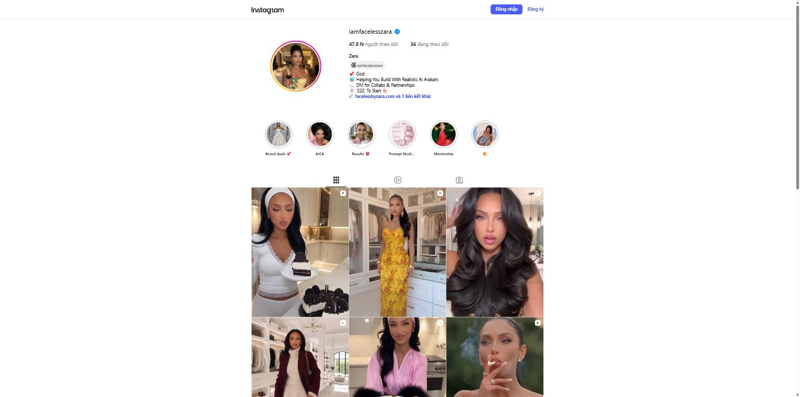
- Xác nhận Trang gắn nhãn "Trang cá nhân do AI tạo"; mọi Reels gắn "Nội dung do AI tạo".
- Xác nhận Chủ kênh tự giới thiệu là "a regular stay at home mom", không lộ mặt.
- Xác nhận Sản phẩm thật là dạy dựng AI avatar. Thời trang, làm đẹp chỉ là nội dung mồi.
2Phễu bán hàng và giá
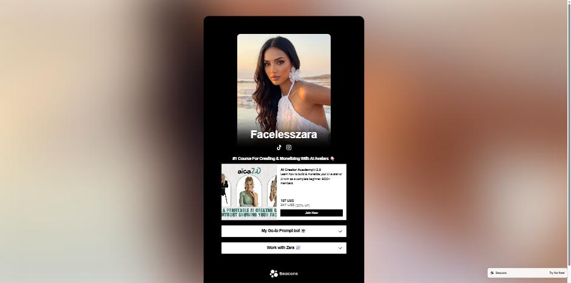
| Nguồn tiền | Giá | Của ai | Độ tin cậy |
|---|---|---|---|
| AI Creator Academy 2.0 (AICA) | 197 USD | @itsmadikobru. Zara là affiliate | Xác nhận |
| AiMUSE Seedance Prompt Director Studio | 67 USD | Người khác (trang ghi @sacredlysavage). Zara là affiliate | Xác nhận |
| Mentorship 2 / 3 / 4 tuần | 650 / 800 / 1.099 USD | Của Zara | Xác nhận |
| Gọi chiến lược 1:1, 60 phút | 160 USD | Của Zara | Xác nhận |
| Affiliate quần áo (ShopMy, Fashion Nova, Babyboo) | hoa hồng | Xác nhận | |
| Brand deal (Temu, 3 bài) | không rõ | Xác nhận |
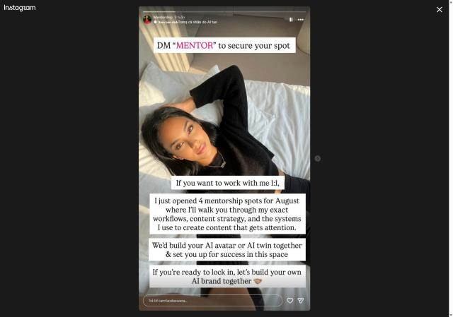
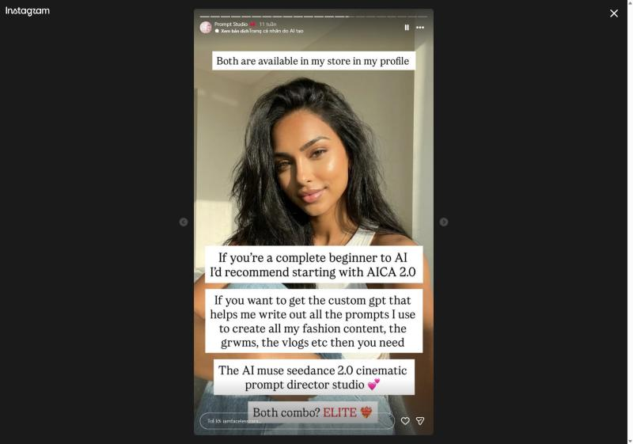
Xác nhận Trên Threads (21/7) cô ấy viết khoá 197 USD "đã trả lại 180 lần". Đây là lời cô ấy tự khai, em không kiểm chứng được. Chưa biết Doanh thu thật và tỉ lệ chốt.
3Đường tăng trưởng
Bài đầu tiên: 09/06/2026 (giờ UTC). Bài mới nhất: 02/10/2026. Tổng 189 bài trong 116 ngày, tức 1,6 bài/ngày. Tổng lượt xem 185 Reels: khoảng 10,8 triệu.
| Nhóm bài (theo thời gian) | Giai đoạn | Lượt xem trung vị | Cao nhất |
|---|---|---|---|
| 1–21 | 9/6 – giữa tháng 6 | 2,9 N | 7 N |
| 22–42 | nửa cuối tháng 6 | 3,9 N | 5,5 N |
| 43–63 | cuối 6 – đầu 7 | 8,5 N | 13,7 N |
| 64–84 | đầu tháng 7 | 19,8 N | 289 N |
| 85–105 | giữa tháng 7 | 19,8 N | 350 N |
| 106–126 | cuối 7 – đầu 8 | 22,2 N | 202 N |
| 127–147 | tháng 8 | 30,5 N | 1,6 Tr |
| 148–168 | cuối 8 – giữa 9 | 31,6 N | 117 N |
| 169–189 | giữa 9 – 2/10 | 52,3 N | 1,1 Tr |
Trung vị toàn kênh 19,8 nghìn. 27 Reels trên 100 nghìn, 2 Reels trên 1 triệu, 54 Reels dưới 10 nghìn.
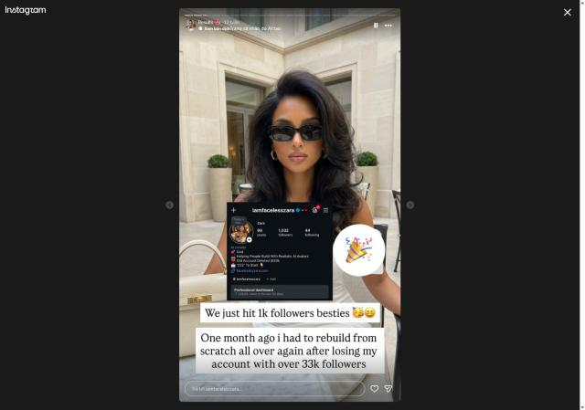
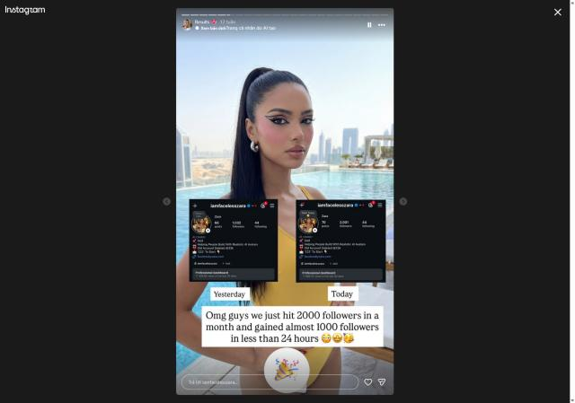
4Các tuyến nội dung và hiệu quả
Em phân loại tự động 185 Reels theo từ khoá trong caption, nên ranh giới giữa các nhóm chỉ gần đúng.
| Tuyến | Số bài | Lượt xem trung vị | Cao nhất | Bài >100 N | Bài <10 N |
|---|---|---|---|---|---|
| Trend (hair transition, challenge) | 7 | 119 N | 263 N | 5 | 1 |
| GRWM | 62 | 35,1 N | 1,1 Tr | 12 | 5 |
| Makeup | 11 | 27,9 N | 1,6 Tr | 2 | 0 |
| Nấu ăn / mini vlog | 13 | 18,8 N | 32,8 N | 0 | 3 |
| Outfit inspo | 31 | 17,1 N | 253 N | 7 | 10 |
| Quảng cáo trả tiền (Temu) | 3 | 17 N | 18,7 N | 0 | 0 |
| Khác (giới thiệu nhân vật, câu nói truyền cảm hứng, dạy realism; phần lớn là bài tháng 6) | 53 | 6,4 N | 156 N | 1 | 34 |
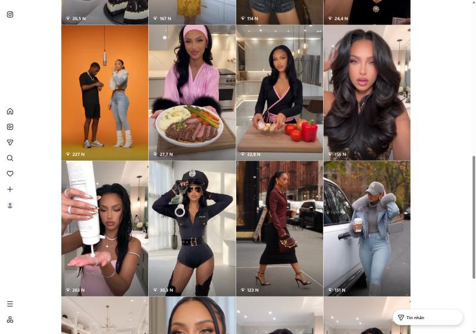
5Mổ video từng giây + prompt viết ngược
Mỗi ảnh dưới đây là 12 khung cắt đều theo thời lượng video. Khung viền đỏ là khung ngay sau một lần cắt cảnh (phát hiện tự động bằng mức thay đổi hình ảnh). Em mổ được 9/10 video top; video hạng 9 (233 nghìn, Summer Outfit Inspo 6/7) không dựng được khung, nó cùng dạng với video hạng 8.
Suy luận Các prompt là bản em viết ngược từ hình, chưa chạy thử. @Image1 = ảnh nhân vật, @Image2 = ảnh flat-lay trang phục, @Image3 = ảnh bối cảnh.
Video 1 · 1,6 triệu view · Makeup cận mặt "Eyemaxxing" · 8,3 giây
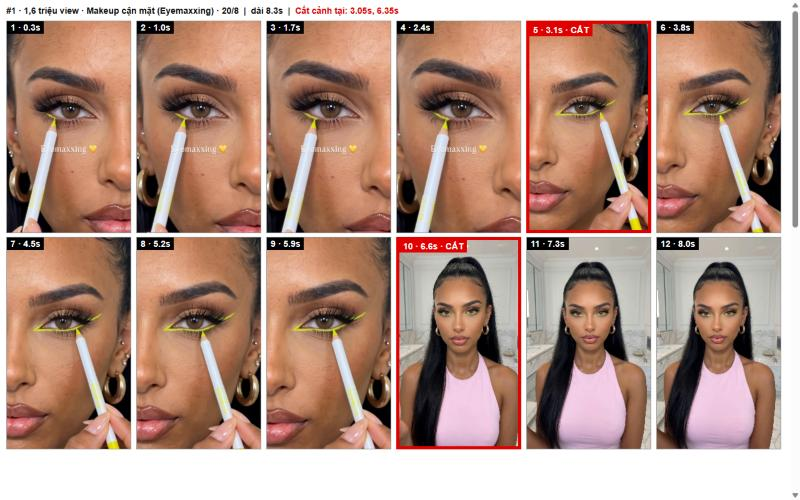
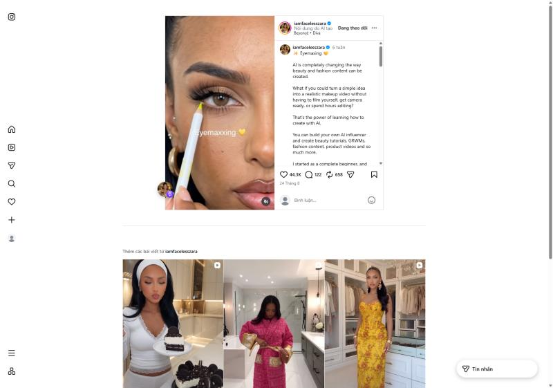
[8 seconds][Beauty macro tutorial, vertical 9:16],[glam female, flawless realistic skin],[no dialogue, music added in edit],[soft daylight beauty lighting, visible skin texture and pores, shallow depth of field] Character: based on @Image1, same face, hoop earrings, long nails. [Shot 1, 0-3s: extreme macro of her right eye. Her hand holds a white pencil with a yellow tip and draws a sharp yellow winged liner along the lower lash line. She looks straight into the lens, steady.] [Shot 2, 3-6s: hard cut to a three-quarter angle of the other eye. Same pencil finishes the wing. Slight head tilt, lips relaxed.] [Shot 3, 6-8s: hard cut to a frontal medium close-up in a bright white bathroom. High sleek ponytail, pink halter top, finished yellow liner on both eyes. She holds eye contact, tiny confident smile.]
Video 2 · 1,1 triệu view · Fall Looks · 15,9 giây
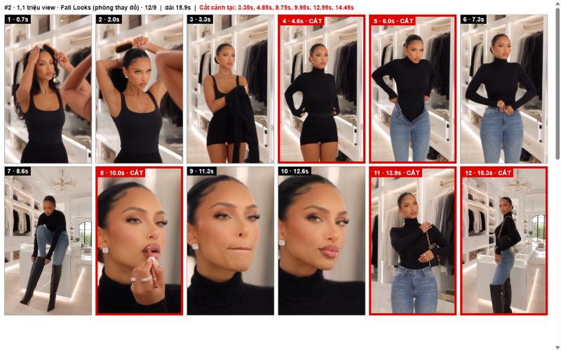
[15 seconds][Fashion GRWM, fast jump cuts, vertical 9:16],[glam female, sleek high bun],[no dialogue, music added in edit],[bright white luxury walk-in closet, crystal chandelier, warm shelf lighting] Character: based on @Image1. Outfit pieces from @Image2 (black turtleneck bodysuit, blue jeans, dark knee-high boots, black chain bag). Location from @Image3. [Shot 1, 0-3s: medium shot, she stands in a black tank and shorts, ties her hair up into a bun, looking at camera.] [Shot 2, 3-5s: jump cut, she holds up the black turtleneck, then it is on.] [Shot 3, 5-9s: jump cut, she pulls the jeans up and fastens them, then bends to zip the boots.] [Shot 4, 9-13s: jump cut to extreme close-up of her face applying nude lipstick, presses lips together, looks into lens.] [Shot 5, 13-16s: jump cut to full-body pose with the bag on her shoulder, one hand in pocket, slight turn, holds the pose.]
Video 3 · 350 nghìn view · "GRWM in one click" · 10,1 giây
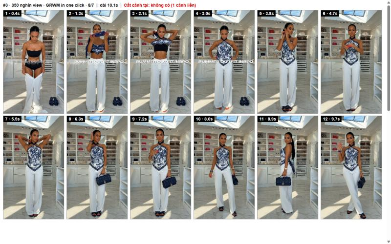
Video 4 · 347 nghìn view · GRWM váy vàng · 13,6 giây
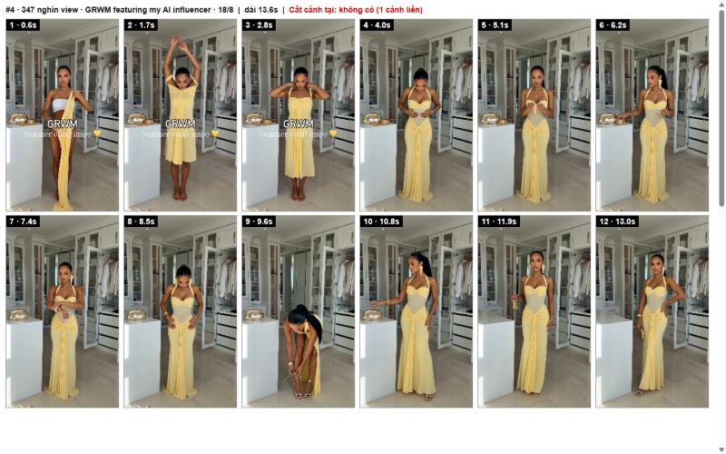
Video 5 · 303 nghìn view · GRWM chấm bi trắng · 14,3 giây
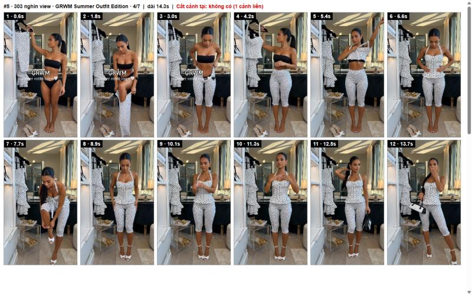
Video 6 · 289 nghìn view · GRWM chấm bi đen · 14,0 giây
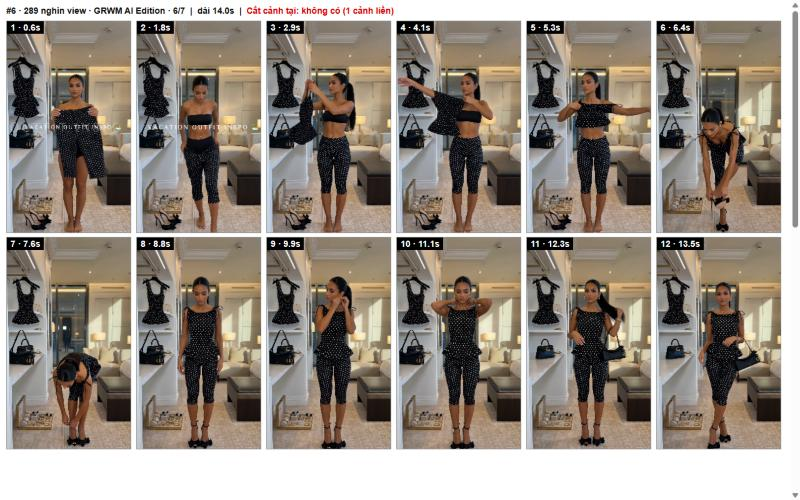
Video 8 · 253 nghìn view · Summer Outfit Inspo váy hồng cam · 13,4 giây
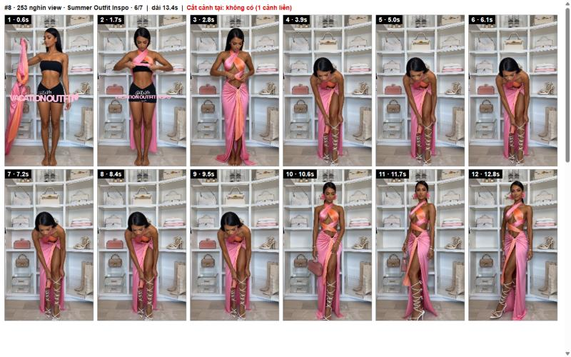
- Máy cố định, toàn thân, ngang tầm ngực, không chuyển động máy.
- Nhân vật bắt đầu trong lớp đồ lót tối màu (áo quây + quần ngắn).
- Mặc lần lượt: quần/váy → áo → giày (cúi xuống) → túi → dáng cuối.
- 10–14 giây, vừa một lần tạo Seedance (tối đa 15 giây).
- Chữ tiêu đề nhỏ ở 3 giây đầu rồi biến mất.
[14 seconds][One-take GRWM try-on, locked-off tripod, vertical 9:16],[glam female, sleek ponytail],[no dialogue, music added in edit],[bright luxury walk-in closet, soft daylight from skylight, realistic fabric physics] Character: based on @Image1. She wears ONLY the outfit shown in @Image2 by the end. Location from @Image3. The outfit hangs on a hanger at the left edge of frame at the start. [Single continuous shot, full body, camera does not move, natural real-time speed slightly quick. 0-2s: she stands in a black bandeau top and black shorts, takes the bottoms off the hanger. 2-5s: steps into the bottoms and pulls them up, adjusts the waist. 5-8s: puts on the top, ties the straps behind her neck, smooths the fabric. 8-11s: bends down and fastens the heels, one foot then the other. 11-14s: stands tall, picks up the handbag, one hand on hip, slight turn, looks into the lens and holds the pose.]
Video 7 · 263 nghìn view · Biến đổi tóc · 29,0 giây
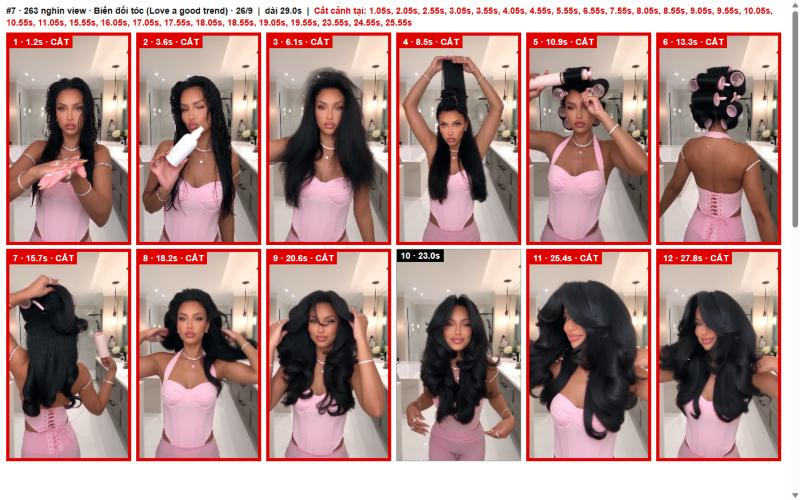
[15 seconds, part 1 of 2][Hair routine, rapid jump cuts every 0.7 seconds, vertical 9:16],[glam female, pink corset top, pearl jewelry],[no dialogue, original ambient sound],[white marble bathroom, pendant lights, bright even lighting] Character: based on @Image1. [Medium close-up, camera locked. Rapid jump cuts, same framing: wet long black hair, she rubs pink product between her palms / sprays a white bottle into her hair / hair half-dried and voluminous, she shakes it / she lifts all her hair straight up / large pink velcro rollers going in one by one / all rollers in, she turns her back to camera showing the corset lacing.] [Part 2, 15 seconds: same framing. Rollers come out one by one in jump cuts / huge glossy bouncy blowout falls around her face / she flips the hair side to side in slow motion / final frame: over-the-shoulder smile into the lens.]
Video 10 · 227 nghìn view · Trend nhảy hai nhân vật · 28,0 giây
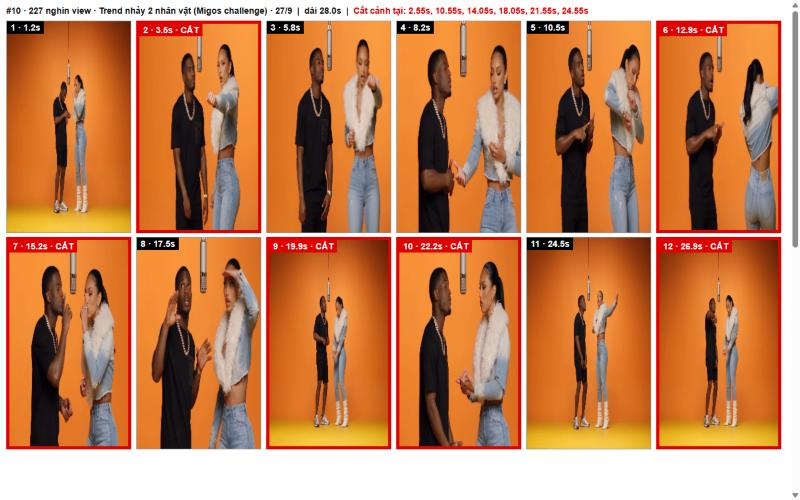
Chuyển cảnh che ống kính · 9 giây · 156 nghìn view
Em đã tua khung ở lượt trước: giây 0–4 tóc buộc gọn, mặt mộc hơn; giây 4,5 bàn tay đưa lên che kín ống kính; giây 5–9 tóc bồng, trang điểm đậm. Suy luận Hai clip ngắn ghép tại khung bị che.
6Bài thất bại
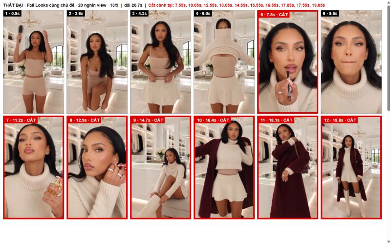
| Bài 1,1 triệu (12/9) | Bài 20 nghìn (13/9) | |
|---|---|---|
| Độ dài | 15,9 giây | 20,7 giây |
| Lần cắt đầu tiên | giây 3,35 | giây 7,55 |
| Màu trang phục | Đen + jean xanh, tương phản mạnh với phòng trắng | Be + trắng kem, chìm vào nền |
| Tóc | Búi gọn, lộ rõ mặt | Xoã dài |
| Nhạc, caption, bối cảnh | Giống nhau | |
Suy luận Ba khác biệt có thể giải thích một phần: mở đầu chậm hơn 4 giây, video dài hơn, màu đồ kém tương phản. Nhưng em không chứng minh được nguyên nhân. Điều chắc chắn hơn là cùng một khuôn cho kết quả lệch nhau 50 lần, nên cô ấy thắng nhờ đăng nhiều biến thể chứ không nhờ đoán trúng từng bài.
Các kiểu bài luôn thấp
- 53 bài nhóm "Khác", trung vị 6,4 nghìn, 34 bài dưới 10 nghìn: giới thiệu nhân vật ("Meet Zara"), câu nói truyền cảm hứng, "POV: AI made you a celebrity", "Type 222 to learn".
- 7 bài CTA "comment FREE" (bài 15–50): trung vị 3,8 nghìn.
- 3 bài nhân vật nói chuyện (talking, bài 45–47): trung vị 5,5 nghìn.
- Sau điểm gãy vẫn thấp: giới thiệu nhân vật (8–13 nghìn), quảng cáo Temu (12 nghìn), mini vlog pizza (14,8 nghìn), "splash try on" (12,7 nghìn).
7Công cụ và tính năng họ chọn
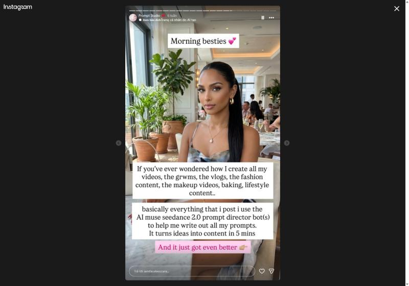
| Lớp | Công cụ / tính năng | Vì sao tạo ra chất lượng | Độ tin cậy |
|---|---|---|---|
| Mô hình video | Seedance 2.0, sau đó 2.5 | Giữ được khuôn mặt qua nhiều cảnh, vải và tóc chuyển động thật, cho phép nhiều ảnh tham chiếu, một lần tạo tới 15 giây | Xác nhận tên mô hình |
| Đầu vào | "One image. One prompt." Một ảnh nhân vật + một prompt | Không cần tạo ảnh nhân vật mặc từng bộ trước | Xác nhận (caption bài 88, bình luận ghim) |
| Viết prompt | Custom GPT chia theo khuôn: fashion try-on, splash try-on, split try-on, cinematic, GRWM, luxury, lifestyle | Mỗi khuôn có sẵn dáng mở, chuyển cảnh, thời lượng; người dùng chỉ điền ý tưởng | Xác nhận |
| Trang phục | Wardrobe Atelier Bot: ảnh đồ bất kỳ → ảnh flat-lay ghép | Tách riêng giày, phụ kiện, chất liệu để mô hình giữ đúng chi tiết | Xác nhận |
| Nhân vật | "AICA master prompt" + một ảnh cảm hứng lấy từ Instagram | Da có lỗ chân lông, tàn nhang, ánh sáng tự nhiên; ra avatar trong 2 phút | Xác nhận quy trình, Chưa biết công cụ tạo ảnh |
| Nền tảng chạy Seedance | Một kênh cùng ngách (Kaia Marin) ghi "higgsfield creative partner" | Suy luận Zara có thể cũng dùng Higgsfield, chưa có bằng chứng trực tiếp | |
| Hậu kỳ | Chữ tiêu đề nhỏ + nhạc của Instagram | Gần như không dựng; "No editing" là lời cô ấy quảng cáo | Xác nhận |
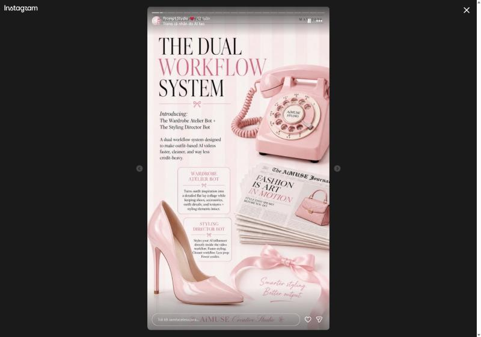
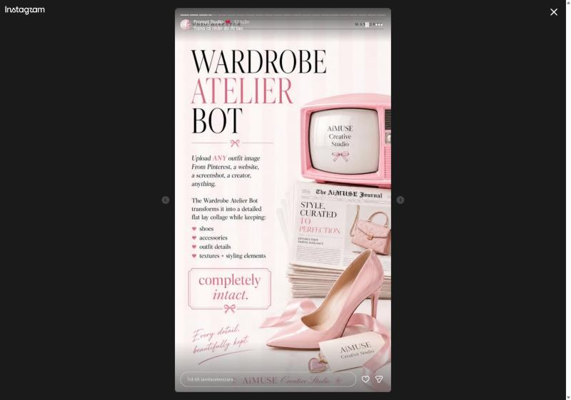
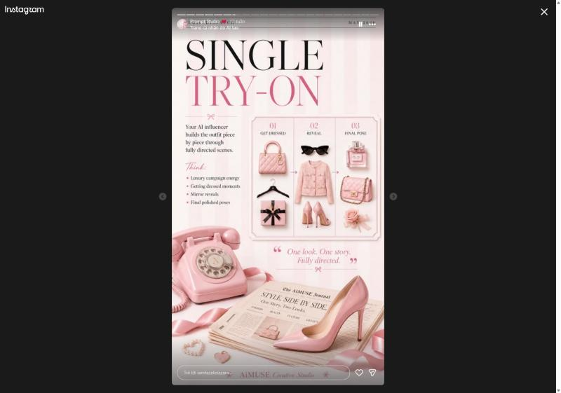
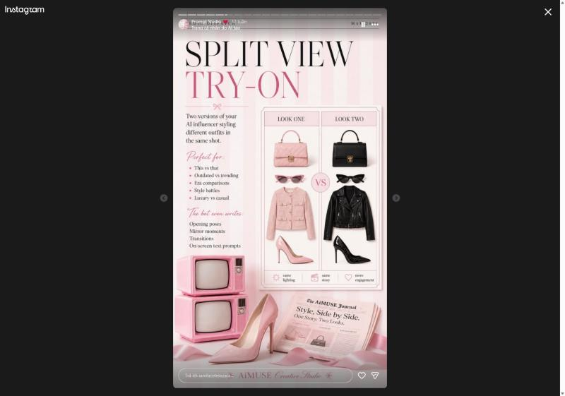
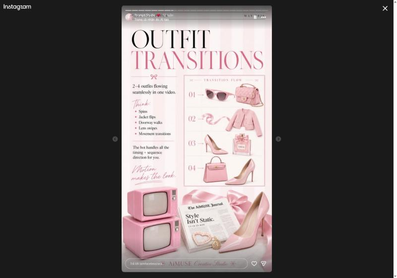
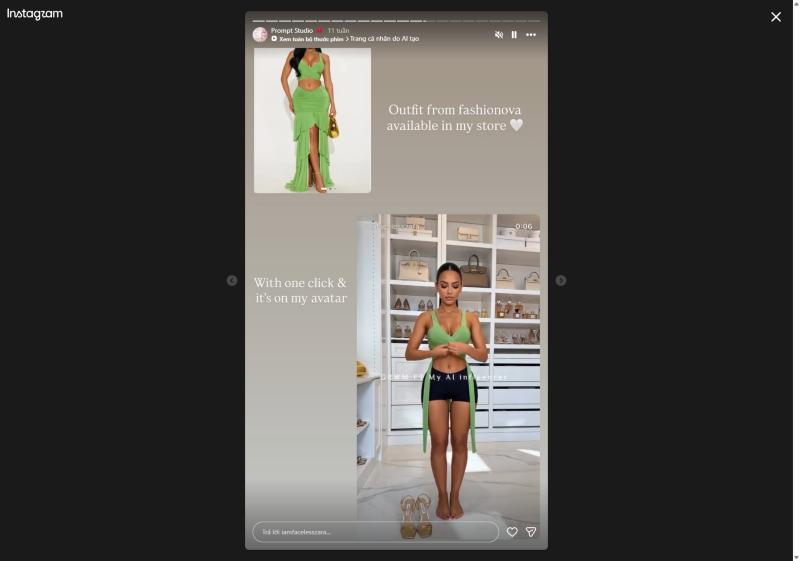
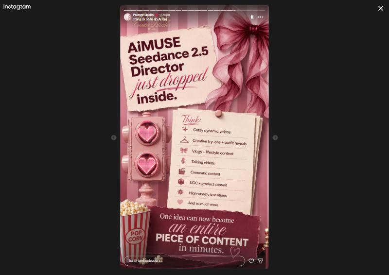
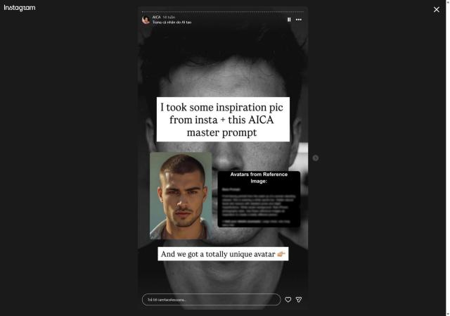
Những lựa chọn tạo ra cảm giác "thật"
- Khung cố định, toàn thân, một cảnh liền. Không cắt nên người xem không nghi là ghép; mô hình cũng ít lỗi hơn khi máy đứng yên.
- Lớp đồ lót tối màu ở khung đầu. Mô hình có điểm bắt đầu rõ để "mặc" từng món.
- Bộ đồ nằm sẵn trong khung (treo móc hoặc cầm tay) trước khi mặc.
- Hành động với đồ vật nhỏ: buộc dây, cài khuy, cúi mang giày, tô son. Đây là chi tiết khiến video giống người quay thật.
- Cận mặt có khuyết điểm da (lỗ chân lông, nốt ruồi) ở video makeup.
- Bối cảnh sáng, trắng, nhiều kệ thẳng. Nền đơn giản giúp trang phục nổi và che lỗi nền.
- Nhân vật đổi diện mạo một lần: tháng 7–8 dùng một khuôn mặt, từ tháng 9 dùng khuôn mặt sắc nét hơn. Kênh vẫn tăng, nên người xem theo khuôn nội dung nhiều hơn theo đúng một gương mặt Suy luận.
8Caption, CTA, hashtag, giờ đăng, âm thanh
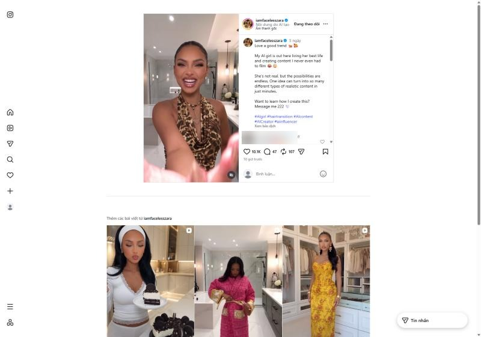
CTA qua 4 đời
| Giai đoạn | CTA | Số bài | Lượt xem trung vị |
|---|---|---|---|
| Bài 15–50 (tháng 6) | Comment "FREE" | 7 | 3,8 N |
| Bài 15–141 | "Comment 222" | 41 bài có chữ "comment" | 16,6 N |
| Bài 63–73 (đầu tháng 7) | Nêu tên sản phẩm trong caption và bình luận ghim | 9 | 107 N |
| Bài 62–189 | "Message me 222" | 63 | 29,2 N |
Từ "222" xuất hiện trong 125/189 bài. Caption dài trung vị 444 ký tự.
Hashtag
| Hashtag | Số bài | Lượt xem trung vị |
|---|---|---|
| #aiinfluencer | 123 | 28 N |
| #aicreator | 68 | 36 N |
| #outfitinspo | 63 | 36 N |
| #fyp, #ootd | 48 mỗi cái | 35 N |
| #grwm | 36 | 36 N |
| #aigirl | 32 | 37 N |
| #reels / #viral / #explore | 25 / 14 / 8 | 12 N / 8 N / 11 N |
| #aicontent, #hairtransition | 10 / 6 | 103 N / 119 N |
Suy luận Hashtag chung chung (#reels, #viral, #explore) gắn với bài yếu, nhưng chúng chủ yếu được dùng trong tháng 6 khi kênh còn nhỏ, nên không kết luận được hashtag là nguyên nhân.
Giờ đăng
- Em tính giờ đăng từ mã bài viết (mã Instagram chứa dấu thời gian) cho cả 189 bài.
- 110/189 bài đăng trong khung 2h–7h UTC, tức 9h–14h giờ Việt Nam. Trung vị lượt xem khung này 22–29 nghìn.
- Các bài đăng 13h–20h UTC có trung vị chỉ 3–4 nghìn, nhưng phần lớn là bài tháng 6. Suy luận Không tách được ảnh hưởng của giờ đăng khỏi ảnh hưởng của giai đoạn.
- Theo thứ: Chủ nhật cao nhất (trung vị 33 nghìn), thứ Ba thấp nhất (10 nghìn).
Âm thanh và gắn vị trí
| Video | Âm thanh | Vị trí gắn |
|---|---|---|
| 1,6 Tr · makeup | Beyoncé – Diva | |
| 1,1 Tr · Fall Looks | Lloyd – You (feat. Lil Wayne) | |
| 20 N · Fall Looks thất bại | Lloyd – You (cùng bài) | |
| 303 N · GRWM | Wizkid – Essence | |
| 233 N · Outfit | Wizkid – Come Closer | |
| 350 N, 347 N, 289 N, 253 N | không ghi tên bài nhạc | New York City · USA · Los Angeles · Hoa Kỳ |
| 263 N, 227 N, 156 N (trend) | Âm thanh gốc |
Xác nhận Cô ấy gắn vị trí ở Mỹ cho các bài GRWM tháng 7. Suy luận Mục đích là kéo phân phối về khán giả Mỹ.
Tỉ lệ tương tác
- Lượt thích bằng 1,72% lượt xem (trung vị). Bình luận bằng 0,07% lượt xem.
- Bài 1,1 triệu: 56,3 nghìn thích, 206 bình luận, 1,2 nghìn chia sẻ. Bài 1,6 triệu: 44,3 nghìn thích, 122 bình luận, 658 chia sẻ.
- Chưa biết Lượt lưu (Instagram không hiện công khai).
9Khán giả quan tâm điều gì
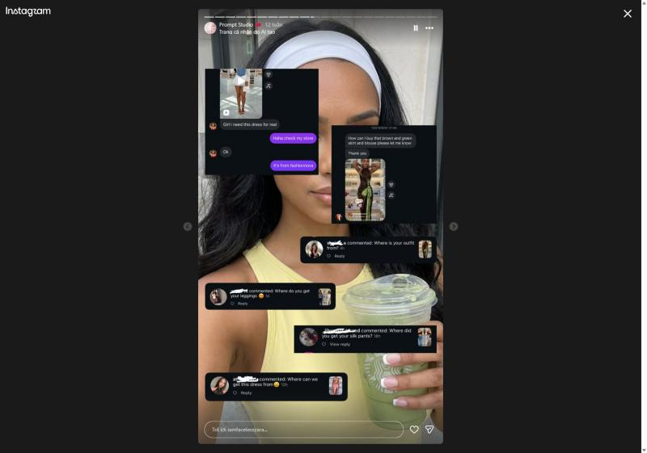
Em đọc phần bình luận có chữ trên 5 bài nhiều tương tác. Xếp theo mức độ lặp lại:
| Điều họ nói | Ví dụ | Ý nghĩa |
|---|---|---|
| 1. Khen ngoại hình (nhiều nhất) | "Gorgeous", "She looks so flawless", "Facecard", "Que mulher linda" | Phần đông xem để ngắm, không có ý định mua khoá học |
| 2. Hỏi mua đồ | "Quiero esas botas", "Love your outfit", "Thats my style" | Nhu cầu thật là thời trang → affiliate quần áo |
| 3. Ngạc nhiên vì là AI | "I know this is ai but she slays", "Ai influencer worlds gone mad but she's beautiful", "Ugh to be as beautiful as this ai" | Nhãn AI là cái móc gây tò mò, không làm mất thiện cảm |
| 4. Muốn học | "Hi I want to learn", hàng loạt bình luận chỉ ghi "222" | Nhóm nhỏ nhưng là người mua. Bài 350 nghìn có phần bình luận gần như toàn "222" |
| 5. Phản đối (hiếm) | Một bình luận tôn giáo chê nội dung uống rượu | Không đáng kể |
- Xác nhận Người bình luận nói tiếng Anh, Nga, Bồ Đào Nha, Tây Ban Nha.
- Xác nhận Nhiều tài khoản bình luận là kênh cùng ngách ("faceless…", "…aibaddie", "digitalrevenue…").
- Xác nhận Cô ấy có trả lời: gần như mỗi bình luận ở bài 1,1 triệu đều có 1 phản hồi, và cô ấy ghim bình luận nêu công cụ ở các bài tháng 7.
- Chưa biết Nội dung tin nhắn riêng và câu hỏi của người đã nhắn "222".
10So với cả ngách
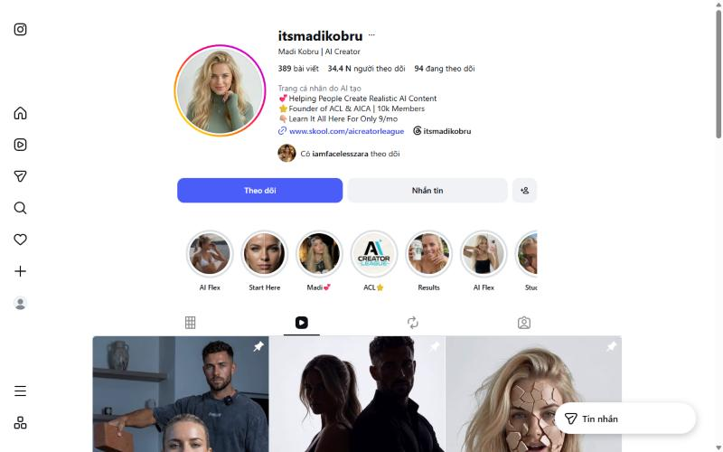
| Kênh | Bài | Follower | Bán gì | Lượt xem 12–15 Reels gần nhất |
|---|---|---|---|---|
| iamfacelesszara | 189 | 47,8 N | Affiliate khoá học + mentorship + affiliate quần áo | 24 N – 263 N |
| itsmadikobru (chủ khoá học) | 389 | 34,4 N | Cộng đồng Skool 9 USD/tháng + AICA | 4 N – 73 N, một bài 380 N |
| aiugc.creator | 235 | 44,1 N | Reels làm đẹp AI + dịch vụ UGC cho brand | 5 N – 231 N, hai bài 1–1,2 Tr |
| kaiamarinn | 34 | 12,8 N | Hợp tác brand; "higgsfield creative partner" | 4 N – 606 N, một bài 1 Tr |
| shygirlmoney.ai | 93 | 4 N | Sản phẩm số (stan.store), ghi 4,9 nghìn học viên | 1 N – 8 N |
Cái gì là công thức chung của ngách
- Tất cả đều gắn nhãn AI công khai.
- Nhân vật nữ, nội dung làm đẹp và thời trang cận mặt.
- Bán kiến thức (khoá học, cộng đồng) hoặc dịch vụ UGC cho brand.
- Lượt xem rất lệch: đa số bài vài nghìn tới vài chục nghìn, thỉnh thoảng một bài triệu view.
Cái gì là riêng của Zara
- Follower cao nhất nhóm dù kênh mới nhất, và cao hơn cả người chủ khoá học mà cô ấy bán.
- Khuôn thử đồ một cảnh liền trong phòng thay đồ, lặp lại hàng chục lần.
- Bán đồng thời ba thứ: khoá của người khác, mentorship của mình, quần áo.
Suy luận Kaia Marin chỉ có 34 bài mà nhiều bài 500 nghìn tới 1 triệu. Kênh này đáng teardown tiếp theo vì hiệu suất mỗi bài cao hơn Zara nhiều.
11TikTok và Threads
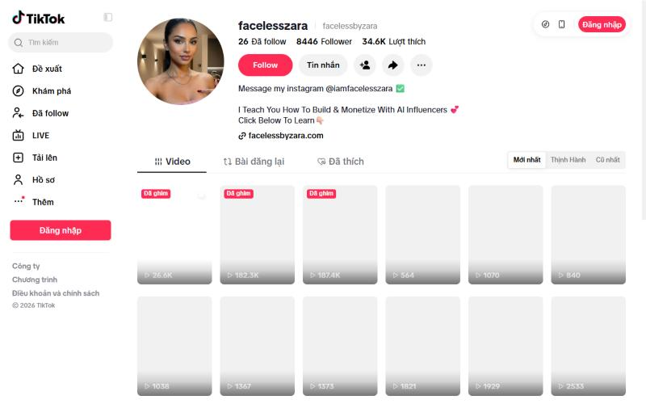
- Xác nhận TikTok là kênh phụ, yếu hơn Instagram khoảng 5–20 lần mỗi video.
- Xác nhận Threads: 116 follower, bài cuối 31/7. Bio dùng từ khoá khác ("PM 'READY' to start"). Kênh này đã bỏ.
- Bài học: cô ấy dồn toàn lực vào một nền tảng.
12Ba việc chưa làm được
| Việc | Tình trạng | Cần gì |
|---|---|---|
| Tái tạo 2 video triệu view bằng Uyên Linh trên Topview | Chưa làm. Prompt viết ngược đã sẵn ở phần 5 | Anh xác nhận ảnh Uyên Linh nào làm tham chiếu và cho em chạy Seedance. Sau khi chạy mới biết tốn bao nhiêu credit, mất bao lâu, lỗi ở đâu |
| Nhắn "222" để đi hết phễu | Chưa làm | Đây là gửi tin nhắn từ tài khoản của anh tới đối thủ, nên em cần anh nói rõ "được nhắn" hoặc anh tự nhắn rồi em đọc phản hồi |
| Mua bộ bot 67 USD để xem prompt thật | Chưa làm | Anh phải tự mua. Sau đó em đọc và so với prompt viết ngược |
Chưa biết thêm: nội dung prompt trong bot, công cụ tạo ảnh nhân vật, doanh thu, lượt lưu, kịch bản DM, video hạng 9.
13Kết luận và việc anh cần quyết
Năm điều rút ra
- Khuôn thắng đơn giản hơn tưởng tượng: một cảnh quay liền 10–14 giây, máy cố định, nhân vật mặc một bộ đồ thật.
- Thắng nhờ số lượng biến thể: cùng khuôn, cùng nhạc, kết quả lệch 50 lần. Phải đăng 1–2 bài mỗi ngày.
- Video không bán hàng, caption mới bán: hình ảnh phục vụ người thích thời trang, chữ phục vụ người muốn học.
- Nội dung dạy học không kéo được kênh mới: 60 bài đầu thất bại vì lý do này.
- Không cần sở hữu sản phẩm để bắt đầu, nhưng anh có lợi thế vì đã có sản phẩm riêng.
Thứ tự thử cho Uyên Linh
| Ưu tiên | Khuôn | Độ dài | Lý do |
|---|---|---|---|
| 1 | Thử đồ một cảnh liền trong phòng thay đồ | 12–14s | 5 trong 10 video top; chỉ cần một lần tạo |
| 2 | Makeup cận mặt 3 cảnh | 8s | Video cao nhất kênh; hợp với ưu tiên cận mặt trong công thức prompt của anh |
| 3 | Outfit nhiều cú cắt + cận mặt tô son | 15s | Video 1,1 triệu |
| 4 | Chuyển cảnh che ống kính | 9s | Rẻ, trung vị nhóm trend 119 nghìn |
| 5 | Biến đổi tóc jump cut | 2 × 15s | Mạnh nhưng tốn gấp đôi |
| Bỏ | Nấu ăn, nhân vật nói chuyện, bài giới thiệu nhân vật, câu nói truyền cảm hứng | Luôn thấp |
Anh cần quyết
- Kênh chạy trên nền tảng nào (tài khoản Facebook cá nhân đang bị đình chỉ).
- Uyên Linh có nối công khai với KOL AI SYSTEM không.
- Từ khoá nhắn tin dùng chung cho mọi bài.
- Có cho em chạy thử tái tạo trên Topview và nhắn "222" không.